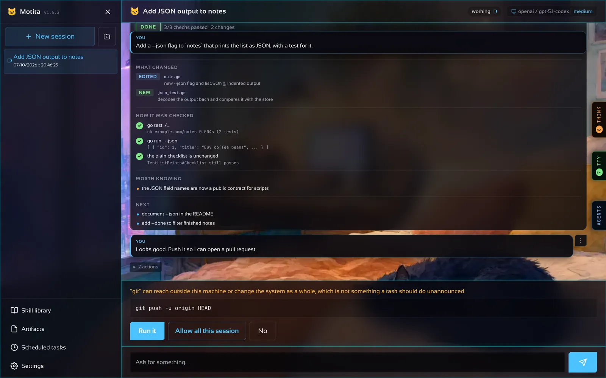

Models and providers
Bring your own model, and pick a different one for each kind of work.
motita does not come with a model. It talks to the one you already use, and the loop around it is the same whichever answers.
Providers
| Provider | How you connect |
|---|---|
| OpenAI, and any OpenAI-compatible host | API key |
| ChatGPT (Codex) | Sign in with your ChatGPT plan |
| GitHub Copilot | GitHub device code |
| Anthropic | API key |
Claude subscription (claude-code) | claude auth login in Anthropic's own client |
| Google Gemini | API key or your own Google login |
| Qwen | DashScope API key |
| Ollama | Nothing on your machine; an API key for Ollama Cloud |
An API key always wins over a stored login. Keys you paste go to a separate owner-only file beside the configuration (~/.motita/motita.env), so the configuration itself can be committed and shared. A key is never sent back to the browser.

From the browser
Settings → Providers lists every provider, where its key comes from, a field for a key and endpoint, and a button that tests the connection by listing the provider's models. Copilot, Qwen, Codex and Gemini can sign in with an account from the same page.
A model for each kind of work
The Models tab sets the default model and, under it, one for each kind of work. A kind left on Same as default follows the session.
| Kind | Used for |
|---|---|
plan | Plan-mode turns |
code | Task mode, and background agents that write |
review | Background agents with the review role |
research | Background agents with the research role |
summary | Titles, compaction summaries, auto mode's guess |
A strong model for planning and a cheap one for summaries is a common split. If a kind's provider has no key, it falls back to the session's model and the log says so.